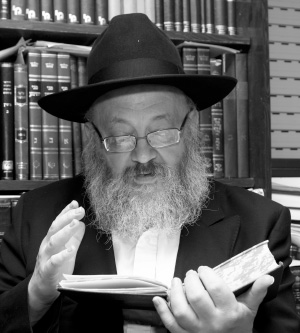

The Rebbe’s Teachings Are Our Shulchan Aruch! (Part 2)
For Gimmel Tammuz, a day to strengthen one’s hiskashrus to the Rebbe Melech HaMoshiach, we spoke with the Chabad rosh yeshiva in Tzfas, one of the Rebbe’s shluchim to Eretz Yisroel, Rabbi Yosef Yitzchok Wilschansky. * How and when should we explain that the Rebbe is chai v’kayam? * How should we regard those who have adopted Chabad’s methods? * How can we achieve achdus? * Part 2
Interview by Avrohom Rainitz
EVERYBODY KNOWS THAT THE REBBE IS CHAI V’KAYAM. IT’S A FACT WE CAN’T HIDE.

Before I address your question, I want to point out that most of the advertisements in Eretz Yisroel emphasize that the Rebbe is the Nasi Ha’dor.
As to your question, the same question was asked ten and twenty years ago, and in many ways, it is much easier to explain it today. Forty years ago when I was a young bachur, we would meet with people who had never heard of Chabad and it took a lot of time to convince them that the Rebbe is the only one who cares for every Jew. People couldn’t relate to that and we had to make comparisons with other Admurim, those whom the Rebbeim truly admired, and to say that with all due respect for those rabbanim and Admurim, they took care of their own people and at most, the immediate environment. The Rebbe, on the other hand, is concerned about every Jew in the world.
Today, we don’t need lengthy explanations. It is sufficient that you say “Rebbe” and everyone knows you mean the Lubavitcher Rebbe who is not the Rebbe of a certain group but the Rebbe of everyone.
But in order for them to understand that the same Rebbe who is concerned about everyone is the current Nasi Ha’dor, you have to say that he is alive. How do you explain that?
The Sephardic chief rabbi of Tzfas, Rabbi Shmuel Eliyahu, went to R’ Yitzchok Lifsh and said to him: This week I had occasion to use what you say, that the Rebbe is chai v’kayam.
A group of tourists visited him and he wanted to explain to them the idea that tzaddikim are called alive. He said to them, “Take the Lubavitcher Rebbe, for example. How many years have passed since 3 Tammuz? And yet, throughout the world people feel that the Rebbe is with them as though nothing happened on 3 Tammuz.”
At the first Kinus HaShluchim after 3 Tammuz, someone who came on a flight from Eretz Yisroel told me that a Satmar Chassid sat next to him. The Satmarer was impressed by the group of shluchim and he said, “His children are alive, he is alive.” He meant to say that he is alive because his children are alive, but we know the Rebbe’s explanation that it’s just the opposite. It’s only because he is alive that his children are alive.
People see the Rebbe’s shluchim and the work of Chabad which continues to grow. They realize that what keeps it all going and growing is the Rebbe and they conclude, on their own, that the Rebbe is chai v’kayam. As many statements that may be released to the newspapers that say this is not quite so, people deal with the reality and not with what it says in the newspaper, and they see that the Rebbe is chai v’kayam.
Actually, everyone today says the Rebbe is chai v’kayam but each person explains it as he likes. We say it’s meant literally and others say it’s meant metaphorically, but nobody can avoid the reality which is that he is alive.
But how do you explain it?
You don’t need to explain it. You can see before your very eyes that Lubavitch is growing and that means that the Rebbe is alive.
If you meet someone who did not hear about Chabad, what do you tell him, that there’s a Rebbe in the world?
Yes, you have to tell him that there is a Rebbe in the world and the Rebbe told us to prepare the world for Moshiach. He calls upon every Jew to help bring Moshiach.
Then you ask him to put on t’fillin and refer him to the local shliach who will take the time to explain to him what the Rebbe demands of every Jew, and how by fulfilling the Rebbe’s horaos one connects to the Nasi Ha’dor. He will also explain to him how he can write to the Rebbe and receive answers.
THE REBBE HAS ACCOMPLISHED THAT NOT ONLY IN CHABAD IS MOSHIACH SPOKEN OF
When I visit Eretz Yisroel I hear that the work of other organizations competes with that of Chabad. It used to be that people knew that Chabad are the only ones who care about Judaism in the army and in prisons. But now we are hearing about other groups who have joined. You can also hear the line, “The Chabad women of Ger gave out Shabbos candles …” Has Chabad’s work weakened? Why is this happening?
Before answering your question, I’d like to point out that the Rebbe always guided us not to be satisfied with current accomplishments. Throughout the years, when people reported to the Rebbe about their successes, the Rebbe’s response, after a line or two in which he expressed his pleasure at the news, was an entire letter of demands to increase the work and not remain complacent.
Your question ought to shake us up. If we see that other movements are being successful, we must be far more successful!
Now I will respond to the point you raised in your question:
The truth is that the fact that other groups have adopted Chabad’s work should make us happy. That is the Rebbe’s goal after all, that everyone, not just Chabad Chassidim, go out to the streets to put on t’fillin and give out Shabbos candles.
They may not know it, but the Rebbe is the one who gives them the ability to go out to the street and do this work. It’s mamash an open miracle of the Rebbe! The one and only explanation for the fact that Gerrer Chassidim stand in public places and give out Shabbos candles is because the Rebbe made it possible for religious women to do so without it adversely affecting their purity and “the dignity of the princess is within.” It goes counter to everything they stood for all the years! The same is true for the yeshiva bachurim who go out to different places – in the past, their roshei yeshiva were afraid that they would be corrupted. What changed? The Rebbe transformed the world into a place in which Judaism can easily be spread and this gives them the ability to join in.
If we look at it from this perspective, today the Rebbe’s strength is ten times stronger than it was previously, because now, they too are doing the Rebbe’s work. What they know or don’t know does not change the reality that they are doing this work only with the Rebbe’s strength. It is one of the signs of Yemos HaMoshiach that the Rebbe was so successful in “forcing all Israel,” so that even former Misnagdim join the Rebbe’s work today to prepare the world for Moshiach. Obviously, we need to make sure that they do this properly, because sometimes they use methods that go completely counter to the Rebbe’s approach, but generally speaking, we should be glad about this.
At the same time, there should be the kinas sofrim (jealousy that spurs one to greater spiritual achievement) which gets us to produce more, and we need to know that if we’ve reached the point where they can take action with the Rebbe’s kochos, than we certainly have greater kochos and we must use these kochos to expand our work, to double and triple its scope.
So the situation is not so bad?
Not at all. Askanim need to sit down and plan how to expand their work, but generally, each shliach today is an empire of mosdos and programs. Unfortunately, this heartwarming work doesn’t get mentioned enough in Chabad publications. Of course, Chabad is doing tremendous work; even in inyanei Moshiach alone, it is far greater than what is mentioned in Chabad publications. Again, I’m not saying this to placate anyone, but to put things into the proper perspective.
Still, what would you recommend to add in light of the work that other groups are doing?
We need to do that which they aren’t yet doing. They bring mitzvos, they connect Jews with Hashem We need to focus on connecting Jews with the Rebbe and chassidus.
At the last Kinus HaShluchim he addressed, the Rebbe said that the avoda of shlichus has ended and the only remaining avoda is to prepare the world for Moshiach. The Rebbe said that mivtza Moshiach is the gateway to all the mivtzaim, and all the mivtzaim need to be permeated with Moshiach. Today, we see how other groups are doing the ten mivtzaim and we have to come and add the core of all the mivtzaim, which is Moshiach.
Mivtza Moshiach doesn’t mean we need to neglect the other mivtzaim, G-d forbid. On the contrary, when everything is permeated with Moshiach we do more mivtza t’fillin, more mivtza chinuch, more mivtza Neshek. We see that those who are very active in Moshiach are the ones who are big activists in all the mivtzaim, because Moshiach adds a chayus to everything.
So our cheshbon ha’nefesh doesn’t need to be about what they are doing, but about what we can add to what they are doing and are not doing enough.
Lately, Moshiach has also become a topic of interest to other groups.
Yes, that is very much the case. At every simcha they play songs of Moshiach and Geula. There is no Chassidic singer today (what they call “Chassidic”) who produces a CD without at least one song about Moshiach. Even on deeper levels, we see plenty of Torah literature on the topic of Geula. Sephardic and Litvish rabbanim say that we are on the eve of the Geula and we need to prepare for Moshiach’s coming.
We see how the Rebbe is causing the dissemination of certain ideas in the world. Things that were out of the question years ago are considered quite acceptable in today’s Litvishe yeshiva world. The topic of Moshiach has become a hit among religious Jews.
Naturally, we need to make a cheshbon ha’nefesh about where we fit into the picture. We need to come up with ideas of how to use the tremendous interest in Moshiach in order to connect people to the Rebbe.
IN ORDER TO EXPLAIN THAT THE REBBE IS MOSHIACH WE NEED TO QUOTE FROM HIS SICHOS
How can we explain to the man on the street that the Rebbe is the Moshiach we have all been waiting for?
Some years ago I participated in a Yom Iyun organized by Bar-Ilan University on the topic of Chabad’s belief that the Rebbe is Moshiach and is chai v’kayam. Distinguished professors explained Chabad’s approach to all aspects of life and to Moshiach, of course. I received an official invitation from the dean of the university to speak about this from the perspective of a Chabad Chassid.
The point that was emphasized throughout the lecture was absolute obedience to what the Rebbe said. Everyone present knew the Rebbe as the greatest Jewish leader; even those who are not considered his Chassidim cannot dismiss what he has to say. They agreed that if the Rebbe said so, there is definitely reason to believe that the Rebbe is Moshiach. Their problem, they said, was that they don’t believe the Rebbe said so explicitly.
This comes from ignorance in what the Rebbe said. I didn’t have to explain a lot; I just had to bring some quotes. In other words, my lecture wasn’t based on feelings but on dry (though powerful) quotes from the Rebbe (see full text of speech in Beis Moshiach English section issue #868).
This is the best way to explain it. We must simply show what the Rebbe said about his being Moshiach and how we need to publicize to everyone that he is the Nasi Ha’dor and the Navi Ha’dor.
According to the program schedule I had only half an hour to speak, but it was enough to quote the Rebbe and to show that according to the Rebbe the Geula process has begun and we’ve reached the point of no return. From the Rebbe’s teachings we see that not only has the time for the Geula come but also Moshiach, the man, has started his hisgalus.
Once we know from the Rebbe’s teachings that he began to be revealed as Moshiach, starting with chezkas Moshiach until Moshiach vadai, then even what happened on 3 Tammuz does not shake our emuna. In light of what the Rebbe said, we believe that this is only a test which conceals the truth. But even for those who don’t accept that the Rebbe is chai v’kayam, it still does not contradict the belief that the Rebbe is Moshiach because there are dozens of places in authoritative early halachic sources that pasken that it is possible for Moshiach to disappear as part of the hisgalus process, and then return. There is no halachic principle that opposes belief in the Rebbe as Moshiach – why should we change the belief which, as I pointed out, is based on the Rebbe’s sichos?
ACHDUS NOW – HOW?
Every year, when 3 Tammuz comes around, the need to strengthen our unity comes up again. What is the way to achieve this despite our different views?
We need to accustom ourselves to emphasize the positive and not the negative. Whatever the topic, if we emphasize the positive, there is no reason for anyone to think we are talking against him, because we did not talk “against” but “for.” When you speak in favor of something that someone does not agree with, it doesn’t provoke him as it would if you spoke against something he considers vital.
What if there are still people who are bothered when you talk in favor of certain topics?
Obviously, everything has its limits. If someone decides that what you support bothers him, that is his problem and he has to learn to restrain himself. If you belong to Hatzalah and you rush to save someone and on the way someone else decides to get in your way, he can’t scream about how you ran into him, because he was the one who got in your way.
We are “day workers” and we have to “spread the light” and not fight the darkness. We need to put aside all the negativity and focus on positive action. When each side focuses exclusively on positive things and doesn’t look for opportunities to attack, we will soon find ourselves wonderfully unified. It’s not beyond us.
Some say, who needs this? Whatever I’ll do, there will be people who will say that I’m not doing the right thing. What is the answer to this? What is the right way to do things to avoid differences of opinion?
The fact that a Chassid comes and asks the question shows that he’s in a good place. Like in the story of the Chassid who went to the Tzemach Tzedek and complained that he had doubts in emuna and the Rebbe asked him: What do you care? The Chassid couldn’t believe this question and exclaimed, “I’m a Jew!”
If it hurts, that’s a good sign. We need to know that when we do the Rebbe’s inyanim there will be opposition. It was always that way and I suppose that is how it will continue to be until we have the complete Geula. You have to tell that Chassid to take the Rebbe’s sichos and he will see what he should be involved in.
To Chassidim, it should be obvious that the most important thing is what the Rebbe said in the sichos. No consideration in the world can set aside fulfilling a horaa from the Rebbe. Speaking of achdus, it is obviously impossible for a son not to listen to his father in order to be b’achdus with his brother.
I hear people who acknowledge that according to the sichos certain things ought to be done but they say that for the sake of achdus we should forgo certain principles. There was a Jew who was mehader in mitzvos but did not do the mitzva of t’fillin. When they asked him why, he said my father a”h told me before he died to stay away from disputes and since the mitzva of t’fillin entails a dispute between Rashi and Rabbeinu Tam, I don’t get involved.
There have been controversies about what to proclaim, with some maintaining that from the sicha of Beis Nissan 5748 we see the proclamation should be “ad masai.” Others say that what we see from the sicha is that we should be saying, “Yechi HA’MELECH.” To the first ones, who say the Rebbe wants us to say “ad masai,” I say, say “ad masai” because you agree with that!
The same is true for other issues. Start with the things you agree with. You agree to the Besuras Ha’Geula? Spread the Besuras Ha’Geula! You agree to “ad masai?” So proclaim “ad masai!” Unfortunately, many of the objectors don’t even proclaim the messages they say they agree with. Not taking action at all is out of the question.
If you can’t delve into the sichos, ask your mashpia and he will tell you what to do, but you certainly can’t sit with your hands folded. A fire is burning and we must extinguish it. If you are afraid that you will mistakenly pour kerosene on it instead of water, then only take what you are sure is water, but you can’t stand off to the side.
Generally speaking, and this is important to emphasize to everyone, there is an order to what we publicize. First and foremost, we publicize those things which the Rebbe said explicitly must be publicized to all. These include the Besuras Ha’Geula, the prophecy of Geula, and the identity of the Goel that is in countless places in the sichos and was underscored once the Rebbe encouraged the proclamation of “Yechi.” Then we need to publicize the Rebbe’s views on all timely topics which are explicit in his sichos.
For example, the idea of chai v’kayam is explicitly in a sicha. The very fact that the Rebbe is chai v’kayam and histalkus is not a possibility is explicit in several sichos, especially the sicha of Shabbos Bo 5752 where it says that even the kind of histalkus which took place with the Rebbe Rayatz, in the sixth generation, will not happen in the seventh. This is explicit and it’s a sicha which the Rebbe edited and gave out for publication, so of course it can and should be publicized.
Still, it is not one of the things about which we received a direct order to publicize. When we first meet a Jew on the street who is wholly unfamiliar with anything on the subject of Moshiach, we first need to convey those things which the Rebbe said to publicize. If he is receptive to the idea of chai v’kayam, he can be told this too, but if not, you can certainly wait for a more opportune time.
“AD MASAI” LEADS TO “YECHI HA’MELECH”
You mentioned before the debate about the sicha of 2 Nissan 5748. How do you explain the fact that most Chabad Chassidim say “Yechi HA’MELECH” or “Yechi Adoneinu” and not many say, “ad masai?” Notwithstanding the importance of “Yechi HA’MELECH,” you cannot deny the dozens of sichos in which the Rebbe spoke about the need to proclaim “ad masai!”
In the sicha of 28 Nissan 5751, the Rebbe spoke sadly about the fact that dozens of Jews had gathered and did not cry out about Moshiach not having come. That means, at every opportunity we need to cry out and ask for Moshiach. Now, when you say, “ad masai,” what are you expressing? That you don’t want galus. When you proclaim “Yechi HA’MELECH,” what are you expressing? That you want Geula!
Therefore, after the inyan of “Yechi HA’MELECH” was revealed, both in the Rebbe’s sichos of 2 Nissan 5748 and in other sichos in the winter of 5752, and after the Rebbe encouraged the proclaiming of “Yechi Adoneinu” for a year and a half, obviously, Chassidim focus on this proclamation. It expresses the desire to leave galus and the yearning for Geula. The proclamation of “Yechi” expresses the idea that you cannot tolerate galus and you can’t wait for the Geula. This is why, when someone proclaims “Yechi HA’MELECH,” he fulfills the Rebbe’s horaa about “ad masai.” There is the rule of “maaseh rav” as it relates to things that Chassidim do in front of the Rebbe; from the time they started proclaiming “Yechi Adoneinu” this was the main declaration and the one the Rebbe encouraged.
By the way, as far as the content goes, to those who want to say both “ad masai” and “Yechi HA’MELECH,” it is more appropriate to say “ad masai” first and then “Yechi HA’MELECH,” because we first go out of galus and then enter Geula.
GIMMEL TAMMUZ – A DAY TO STRENGTHEN EMUNA
Let us go back to the topic with which we began this interview. What are the feelings that a Chassid has about Gimmel Tammuz?
If I had to define the idea of 3 Tammuz in a few words, I would say: It is the day of the Rebbe and the Chassidim.
In the HaYom Yom for 3 Tammuz, it says that the Rebbe Maharash said: “A Jewish groan which G-d forbid arises from physical misfortune is also a great t’shuva; how much more so then, is a groan arising from spiritual distress a lofty and effective t’shuva. The groan pulls him out of the depths of evil and places him on a firm footing in the realm of good.”
When the Rebbe said that B’nei Yisroel already did t’shuva, many did not understand this. After all, we don’t see millions of baalei t’shuva. The Rebbe addressed this in one of his sichos and mentioned this HaYom Yom and said that since there is no Jew who has not groaned, everyone has done t’shuva, a lofty t’shuva!
On 3 Tammuz 5754, whatever you want to say about it, there was a big groan on the part of Am Yisroel. Even those to whom the idea of chai v’kayam is a given, groaned. And this groan, which – by divine providence – was written in the HaYom Yom for 3 Tammuz, definitely brought us closer to “immediately they are redeemed.”
There is no doubt that 3 Tammuz is a day when we need to strengthen our hiskashrus to the Rebbe, so that we don’t, G-d forbid, reach a state of slacking off. We need to do all we can not to weaken in the avoda the Rebbe gave us.
We have to know that by the Rebbe there are only aliyos. It is not possible for 3 Tammuz to have been a retreat. On this day we passed another stage in the Geula process. At the same time, in order that the events of the day not weaken our emuna, on this day, more than other days, we need to strengthen our belief in what the Rebbe said and not allow any weakness to creep in to our belief in the Rebbe and what he said.
Boruch Hashem, we see how since 3 Tammuz Lubavitch continues to grow. Hundreds of new shluchim have gone out; hundreds of new mosdos were opened, and thousands of baalei t’shuva have joined Lubavitch. By Anash we also see a certain awakening, whether it’s in learning inyanei Moshiach and Geula or Yemei Iyun or Shabbatons on the theme of Geula. The Chabad yeshiva world has doubled, hundreds of kovtzim were published, learning contests in yeshivos include thousands of bachurim who sit and study the Rebbe’s teachings about Geula.
The real message of 3 Tammuz is that we need to know that we must withstand the test. There is the famous mashal about the father who hides from his son to test his love. What is the purpose of the test? The father wants to see that the son won’t stop waiting for him to come back. The father wants to see that the son doesn’t make peace with the situation and merely think nostalgically of days gone by. Rather, he won’t stop hoping and waiting for his return.
What happened on 3 Tammuz is a test. There is no other explanation for a concealment like this. When we are in the “highest time,” as the Rebbe said, and the Geula process has already begun in the world, of all times, we have this concealment! It seems to be a test whose purpose is to see how much we truly believe and look forward to the complete hisgalus.
At this time, let us review the Rebbe’s sicha about the meaning of the names of the children of Yosef, Menasheh and Efraim. Menasheh was for “Hashem made me forget,” and Efraim was for “Hashem made me fruitful.” With Menasheh we see Yosef’s anguish over his exile and distance from his father. The name Efraim shows that he understood that being in galus is for a purpose, namely all his work and efforts in Egypt; that is the proper approach that we need to adopt.
Avrohom Rainitz. "The Rebbe’s Teachings Are Our Shulchan Aruch! (Part 2)." Beis Moshiach, no. 883 (June 13, 2013).